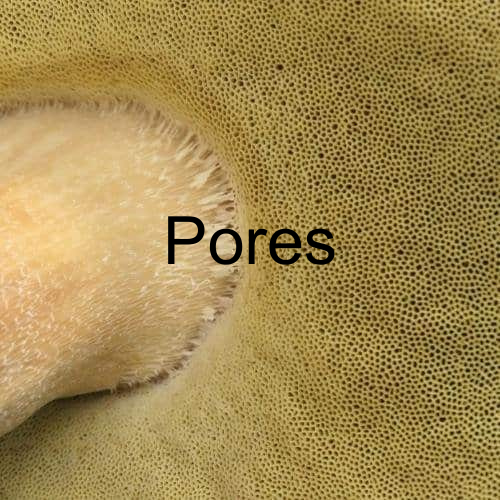
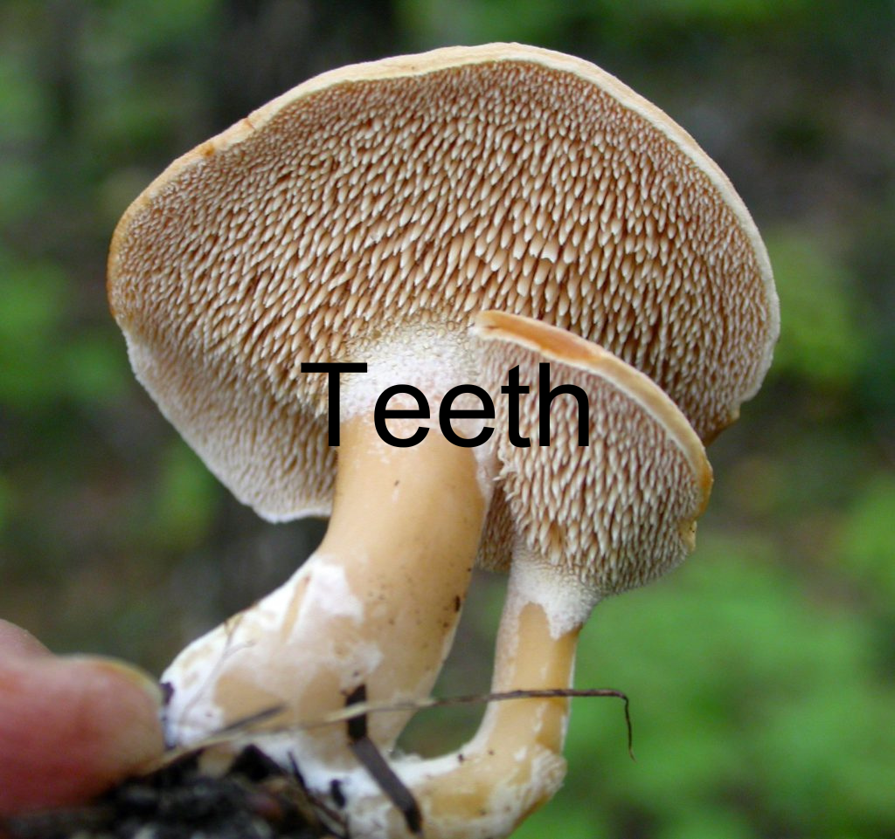
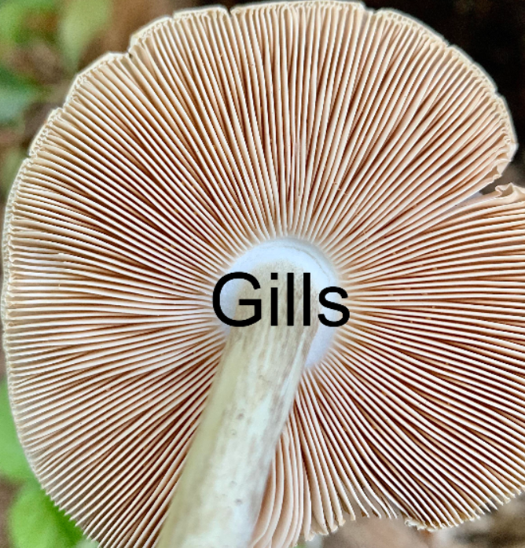
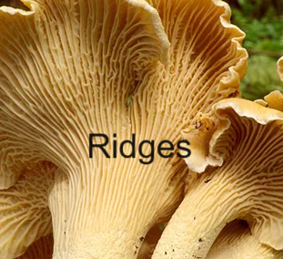

Home
Information about the tool
Information about species
Angel's wings
Bitter bolete
Cantharellus pallens
Chanterelle
Common puffball
Depressed hedgehog
Devil's bolete
Dryad's saddle
False chanterelle
Field mushroom
Horse mushroom
Oyster mushroom
Pale oyster
Penny bun
Sarcodon squamosus
Sarcomyxa serotina
Summer bolete
Wood hedgehog
Yellow stainer
   
Look under the cap. Which of these descriptions best fit the underside?
Pores: small, sponge-like holes
Teeth: long, thin tooth-like growths that hang from the mushrooms cap
Gills: small, thin-walled structure. Can be removed from the cap when touched
Ridges: a thin-walled structure like the gills, but cannot be removed from the mushroom when touched